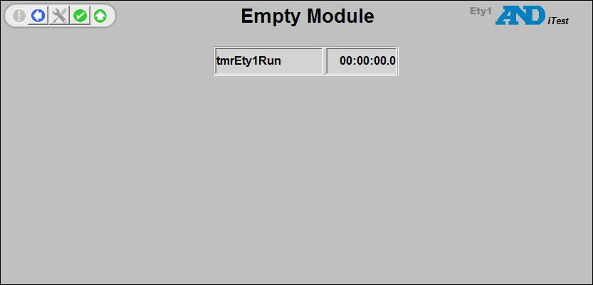

iTest User's Guide
The module Ety1.EmptyModule installed with Solution.Demo in iTest 3.5 and later.
It is basic starting point for new iTest device modules that are compatible with Solution.Demo.
Only the existing files are shown here, a completed module may have many other files.
Channels
| Channel | Description |
| Channel Definitions \ Ety1 | Module channels (excluding external input/output channels) |
| Channel Definitions \ ioEty1 | External input/output channels (analog in, analog out, etc.) |
| Ety.ini | File for persisting channel values |
Calculations
| Calculation | Description |
| System Rate \ Ety | System rate calculations |
Test Development
| Procedure | Description |
| Procedures \ Ety1Action | Module actions (for ready, start, stop etc.) |
| Procedures \ Ety1Display | Procedure that opens module display |
| Procedures \ EtyInit | Module initialization procedure (called from <MID>Action) |
| Procedures \ EtyUpdateStatus | Started by the Module Configuration tool when status is changed |
Data Logging
| Log Order List | Description |
| Log Order List \ Blackbox | Empty channel log list |
| Log Order List \ main | Empty channel log list |
Presentation
| Display | Description |
| Displays \ Standard \ Ety1_EmptyModule | Main module display |
Channel Descriptions
| Channel Name | Type | Description |
| flgEty1Busy | VO | 1 = Module is performing a global action |
| flgEty1Disabled | VO | 1 = Module does not take part in global actions |
| flgEty1Fault | VO | 1 = Module fault detected |
| flgEty1IniRead | VO | 1 = INI file has been read |
| flgEty1OnLine | VO | 1 = Device on line |
| flgEty1RunFaultResponse | VO | Module configuration, 0 = None, 1 = Notify, 2 = Action |
| flgEty1StartFaultResponse | VO | Module configuration, 0 = None, 1 = Notify, 2 = Action |
| flgEty1TestFaultResponse | VO | Module configuration, 0 = None, 1 = Notify, 2 = Action |
| tmrEty1Run | Timer | Running time |
| vsEty1ModuleID | VO | Module identification string |
| vsEty1Desc | VS | Module description |
Module Display
